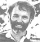
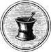
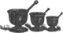

This issue's column was guest-written for Dr. Tom Ferguson by a contributor to Medical Self-Care magazine.
Penny Righthand, R.N.
Homeopathy is based on a philosophy of healing that's quite different from the biomedical model used by orthodox (allopathic) physicians. Homeopaths believe that most of the pharmaceutical drugs commonly prescribed by allopaths simply suppress symptoms without curing the illness. So, instead of traditional medications, homeopaths prescribe tiny doses of specially prepared remedies plants, animals, and other sources-to help the rid them body . mobilize its own healing energies.
A Little History
The guiding principles homeopathy were developed in the early nineteenth century by a German physician, Samuel Hahnemann. Disenchanted with the accepted medical practices of his day-such as bleeding and blistering patients to rid of "bad bodily fluids" Hahnemann stopped practicing and became a medical translator, in order to learn about health care methods used in other parts of the world. During his research he read that quinine cured malaria "because of its astringent and bitter qualities." That explanation seemed inadequate to him, so he proceeded to look for a better one by ingesting quinine himself. As he took repeated doses, he observed that the medicine produced the symptoms of the very disease it cured. As the drug wore off each time, the malarial symptoms disappeared. He concluded that quinine cured malaria by reproducing its symptoms.
This observation, and others like it, were recorded by Hahnemann and became the basis for the fundamental principle of homeopathy, the law of similars, which states that a substance that produces in a healthy person the symptoms of a disease can be used to cure that disease.
Hahnemann spent the remainder of his life experimenting with other remedies-nearly 100 in all-and testing (homeopaths call it "proving") the extracts on himself and other healthy people. He carefully cataloged he preparations and the symptoms they produced, and then referred to his journal in order to treat sick people, prescribing very small doses of whatever substance was known to bring on symptoms similar to those of the illness in question. (Homeopathic physicians today still rely largely on Hahnemann's observations, which have been incorporated into reference works known as homeopathic materia medi ca: books that list the substances and symptoms noted through "provings.") The approach worked well, and by the mid-1800's, homeopathy was practiced widely in Europe and North America, despite the fact that it was branded as "unscientific" by many orthodox physicians.
In 1844, the American Institute of Homeopathy was established, and two years later the American Medical Association was founded. The AMA refused homeopaths admission to their fledgling society, even though most homeopaths had also been trained in the allopathic medicine of the day. The AMA also expelled some of its members for merely consulting with homeopaths.
Nonetheless, homeopathy flourished in the United States during the late nineteenth century, as an alternative to allopathic bloodletting and purging. Many members of the social, intellectual, and political elites turned to homeopathy after seeing its impact on epidemics of cholera, yellow fever, scarlet fever, and meningitis in Europe. Some epidemiological studies of the time showed homeopathic treatment to be actually more effective than allopathic care.
As the AMA gained influence, however, its strong antihomeopathy position discouraged American physicians from studying the alternative healing art. A further deterrent was the emergence of new allopathic drugs that speeded treatment and helped orthodox medicine progress beyond bleeding and purging.
Then, in 1911, the Flexner Report, a highly influential evaluation of medical schools, rated homeopathy training programs so poorly that foundation and government support was withdrawn, and homeopathy virtually disappeared from the American medical scene. In England and other countries, however, homeopathy continued to be popular and widely respected. Gandhi believed in it, and even today the British royal family's physician is a homeopath.
Homeopathy Versus Allopathy
Allopathic medicine takes the view that symptoms must be counteracted or suppressed. Homeopathy views symptoms as expressions of the body's curative processes. Thus, homeopaths do not try to eliminate symptoms; rather, they welcome them as signs of healing.
The allopath treats with opposites: decongestants for nasal congestion, antibiotics for bacteria. Homeopaths rely on the law of similars. If nasal congestion is one symptom, a homeopath might administer a remedy known to bring on a brief, mild aggravation of congestion in order to cure the disease.
Finally, allopathic medicine generally holds that more is better. If a certain dose of medication does not alleviate the problem, most M.D.'s would prescribe larger doses. Homeopaths believe that less is more. Their remedies are highly diluted, and they try to give the smallest number of doses possible. Homeopaths believe that despite ex treme dilution-to the point where only a few molecules of the remedy might actually be taken-their prescriptions stimulate the body's "vital force" and catalyze the cure.
Many allopaths scoff at the high dilution of homeopathic remedies. Critic Dr. Stephen J. Barrett, author of The Health Robbers, concedes that the remedies are safe, but adds, "That's because they're too weak to have any effect at all." Homeopaths counter that their remedies produce few, if any, of the side effects that are brought on by many allopathic drugs.
Meanwhile, over the years allopathic medicine has quietly adopted some homeopathic approaches. The vaccination theory developed by Edward Jenner and Louis Pasteur was clearly an application of the homeopathic law of similars: Vaccines use tiny doses of ac tive ingredients, often produce the symptoms of the illness they are used to prevent, and stimulate the body's own disease resistance. Constantine Hering, known as the Father of American Homeopathy, introduced nitroglycerin as a treatment for angina pectoris. It is prescribed routinely by allopathic physicians today.
Research Stalemate
Despite considerable historical and testimonial support for homeopathy, many orthodox physicians automatically dismiss such "anecdotal reports" unless they're corroborated by rigorously controlled studies. This has led to something of a stalemate. Orthodox physicians have not investigated homeopathic remedies ...in part because of the AMA position that they have no value, and in part because the major funders of medical research-the government, foundations, and drug companies-do not give such research much priority. Most homeopaths, on the other hand, believe that stringent scientific studies are not necessary. They are as satisfied with their remedies as acupuncturists are with their meridian-based healing.
Recently, however, some substantial research has been conducted. In a British doubleblind study, researchers gave arthritis patients their usual medication plus either a placebo or the appropriate homeopathic remedy. Twenty-two percent of those who received the placebo showed improvement, but 80 percent of the homeopathic group improved. And William Tiller, of Stanford University, has advanced theoretical explanations for the law of similars and homeopathic dilution that reach to the very frontiers of the new physics.
The International Foundation for the Promotion of Homeopathy, and other homeopathic organizations, are presently waging legislative battles in several states to establish licensing criteria for homeopaths. They are also attempting to set up homeopathic schools in Florida and Arizona. Jonathan Harger, newsletter editor for the American Center for Homeopathy in Arlington, Virginia, estimates that as many as 5,000 U.S. allopaths and osteopaths practice homeopathy "to varying degrees."
As alternative healing arts continue to gain acceptance in the United States, the future may well see homeopathy again become a widely accepted form of treatment.
EDITOR'S NOTE: For further information on this subject, you may want to read Homeopathic Medicineat Home, by Maesimund B Panos M.D., and Jane Heimlich (1981, J.P. Tarcher, $6.95) or Homeopathy: Medicine of the New Man, by George Vithoulkas (1979, Arco, $3.95).
Medical Self-Care, Dr. Tom Ferguson's quarterly journal, available for $15 per year from Medical Self-Care, P.O. Box 717, Inverness, CA 94937. A sample issue of the publication costs $4.00. Dr. Ferguson's book, which is also titled Medical Self-Care, can he ordered for $10 postpaid from the same address.
|
 |
 |
 |